Image Feature¶
约 2371 个字 24 张图片 预计阅读时间 12 分钟
Abstract
- Image feature
- Image matching
- Feature detection
- Harris operator
- Invariance
- Scale Invariant Feature Transform (SIFT)
Image Matching¶
Panorama(全景图)
做图像拼接: 检测两张图像的特征点，找到对应的点对，用这些点对对齐图像
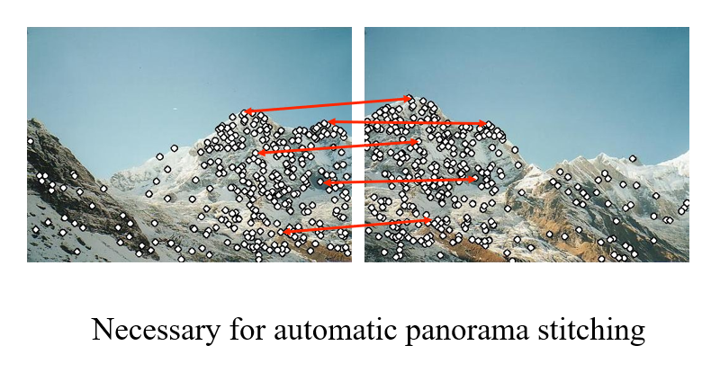
Feature detection¶
提取出局部的具有几何不变性的特征
怎样找到一个好的特征？ ——找到一个非同寻常的区域
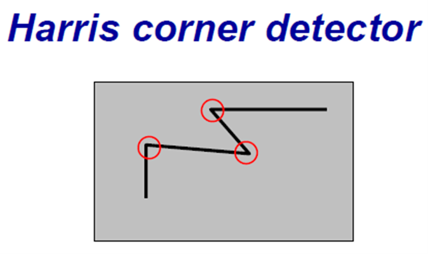
我们考虑一个小窗口的像素
- flat: 在任何方向都不会有像素的改变
- edge: 沿着边的方向不会有像素的改变
- corner: 在任何方向都会有明显的改变
量化窗口像素的变化: \(W\) 表示窗口，\((u,v)\) 表示方向
泰勒展开:
如果 \((u,v)\) 是个小量，那么我们可以用一阶微分估计：
将式子带入之前的公式得到
记中间的矩阵为 \(H\) 。沿着矩阵 \(H\) 的两个特征向量，变化最大。
探测特征的方法就是计算 \(H\) 的特征向量。
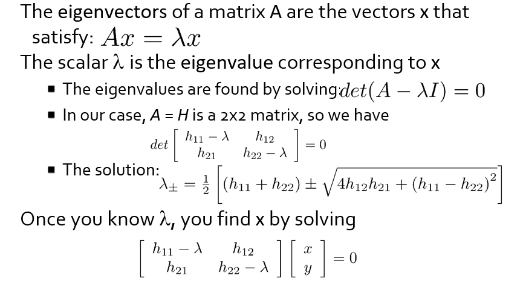
特征值和变化大小的关系
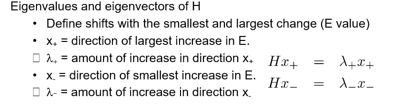
\(\lambda_{+}, \lambda_{-}\) 比较大时，这是一个好的位置（因为沿各个方向的变化都较大）
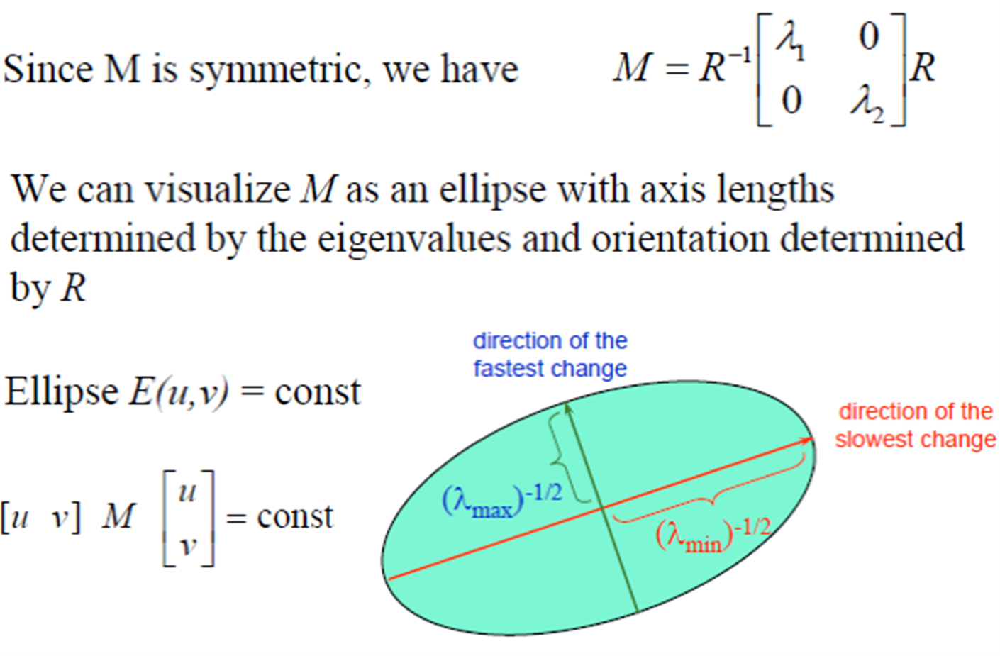
一个大一个小: \(edge\); 两个都小: \(flat\)
Feature Detection
- 计算图像中每个点的梯度
- 通过梯度得到每个 windows 的 \(H\) 矩阵
- 计算特征值
- 找到相应较大的点(\(\lambda_- > Threshold\))
- 选择那些 \(\lambda_-\) 是局部极大值的点作为特征
The Harries operator¶
\(\lambda_-\) 是 Harries operator 用于特征检测的变体
- \(trace(H)=h_{11}+h_{22}\)
- 这就是 “Harris Corner Detector” or “Harris Operator”, 这个算子得到的是一个响应值
Some properties¶
- 旋转不变性
椭圆旋转，但长轴短轴的形状不变，特征值也不变
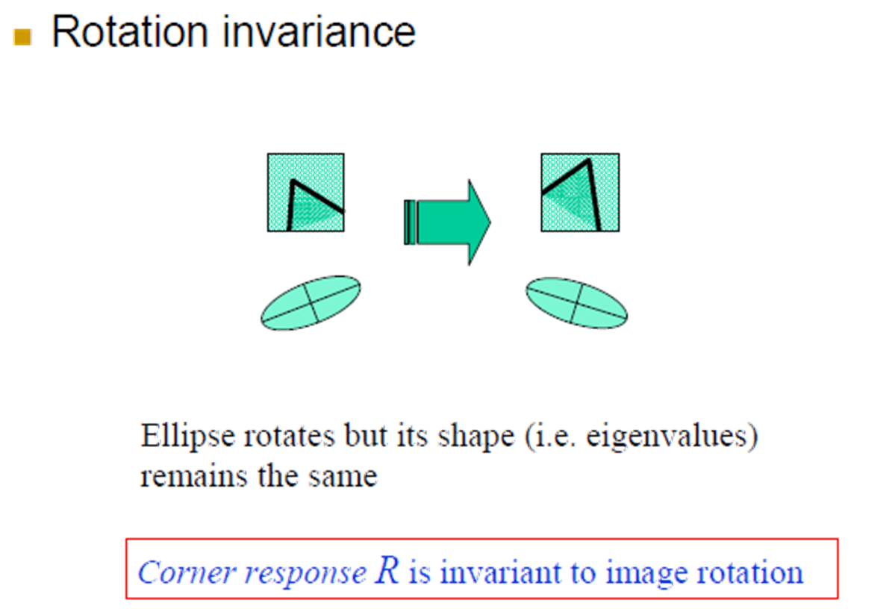
- 图像强度不影响
- 对加法和数乘强度变化保持不变 \(I\rightarrow I+b,I\rightarrow aI\)
- 极值点不变
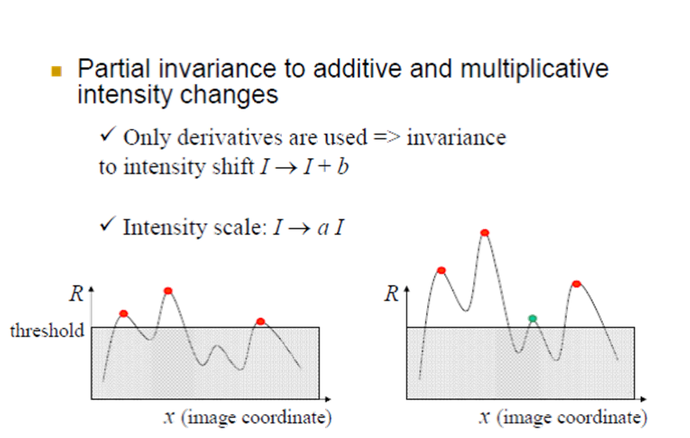
- 图像尺度变化会有影响！
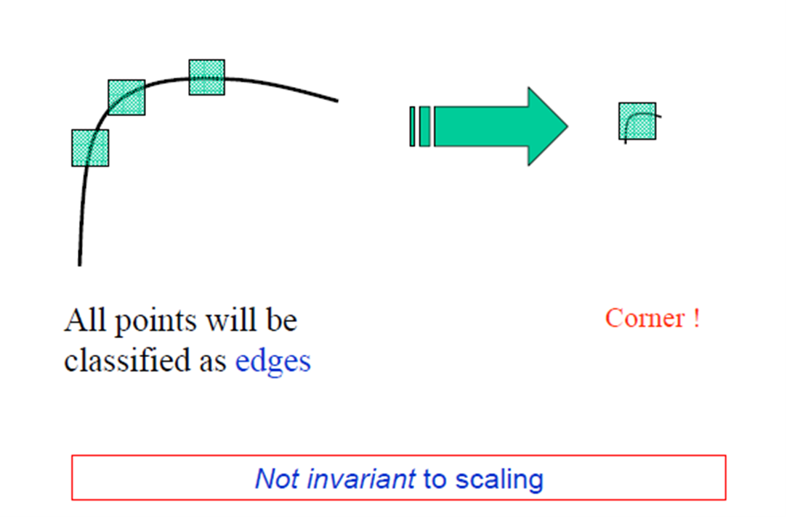
Scale Invariant Detection¶
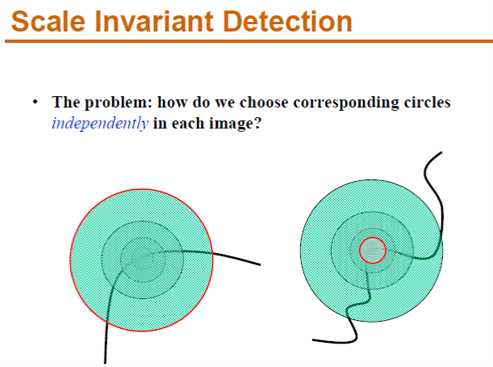
在区域内设计一个比例不变的函数
在不同的图像(比例不同)，极值点在同一个位置出现
a. edge, 没有极值点
b. 好几个极值点 不知道是哪个
c. good
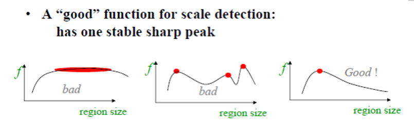
能筛掉前两种
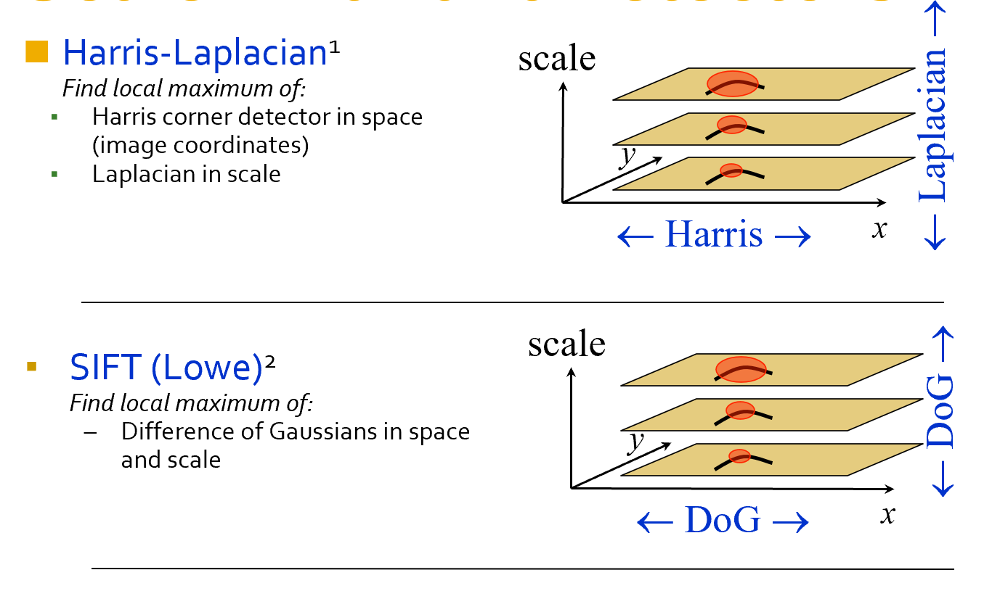
二者思路相同, kernal 略有差异
\(f=Kernal * Image\)
kernals:
- \(L=\sigma^2(G_{xx}(x,y\sigma)+G_{yy}(x,y,\sigma))\)
- \(DoG=G(x,y,k\sigma)-G(x,y,\sigma)\) 其中 \(G(x,y,\sigma)=\dfrac{1}{\sqrt{2\pi}}e^{-\frac{x^2+y^2}{2\sigma^2}}\)
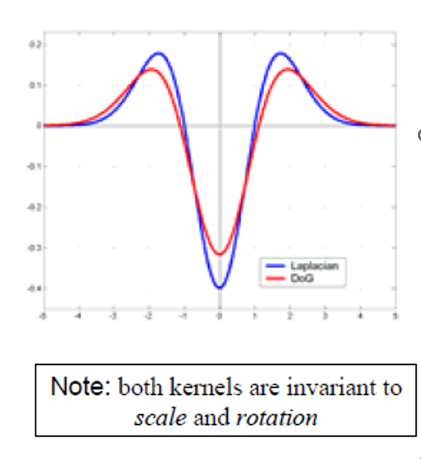
Harris-Laplacian¶
不同维度计算方法不一样
- 初始化：多尺度的 Harris corner detection(改变清晰度后，单独找角点)
只有在任何尺度上都是角点的点，才能被保留 - 基于拉普拉斯算子，进行尺度选择。对一个位置，哪一个尺度上拉普拉斯值最大，将这个位置和尺度作为角点。（唯一性，在这个尺度上是极大值，那么在另一个尺度上也是极大值，只是极大值的数值可能不同）
Laplacian-of-Gaussian = "blob" detector \(\nabla^2 g=\dfrac{\partial^2 g}{\partial x^2}+\dfrac{\partial^2 g}{\partial y^2}\)
在图像中给定的一个点，我们定义拉普拉斯响应值达到峰值的尺度为特征尺度(characteristic scale)
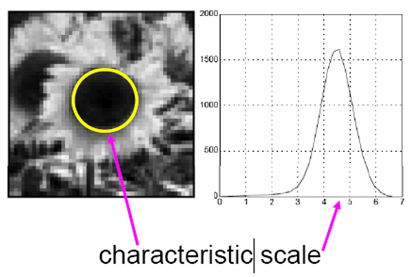
SIFT¶
详细介绍：SIFT
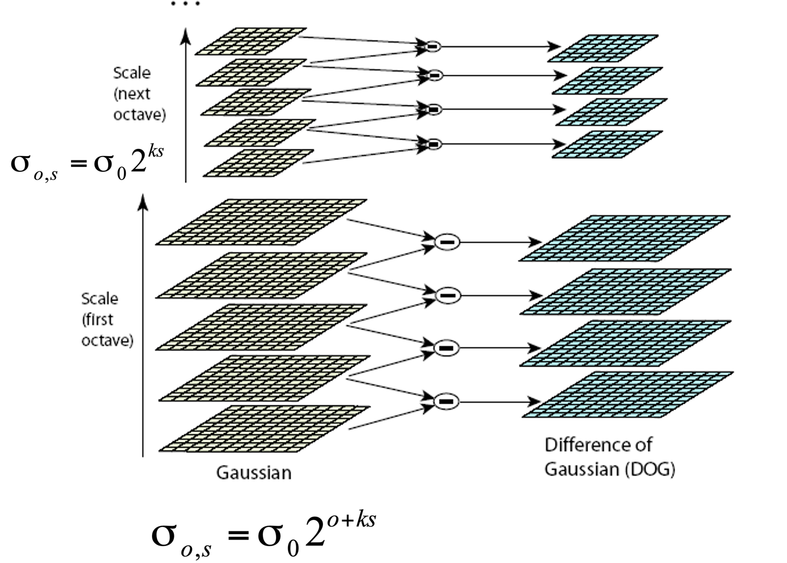
三个方向都是 DOG.
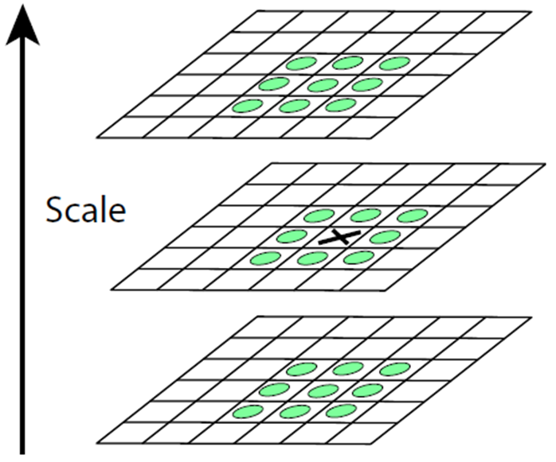
对于画 × 的需要比较26个邻居才能得出其是否是极值，计算速度相对较慢。
得到角点后，我们可以提取角点的特征，如方向性
-
梯度和角度
其中 \(m(x,y)\) 是点的幅值，即 x 方向的差分和 y 方向的差分的平方和\(\theta(x,y)\) 是通过 y 方向的梯度和比上 x 方向的梯度的反正切计算
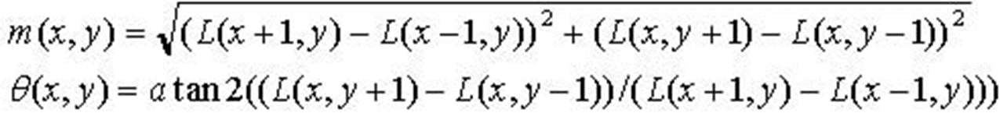
-
方向选择
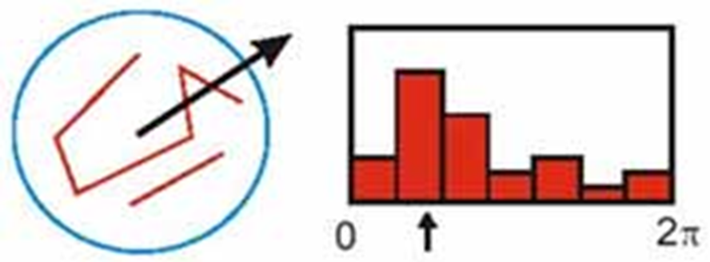
可以用投票的方式定义邻域的朝向
SIFT Descriptor¶
Invariance:
假设这里有两幅图像 \(I_1, I_2\), 其中 \(I_2\) 是 \(I_1\) 经过某种变换后的版本（仿射变换，亮度等）
在变换中不变的特征称为变换不变性
SIFT 特征：旋转不变性
根据其主要梯度方向(dominant gradient orientation)旋转 patch, 这样可以使他处于规范方向
Scale Invariant Feature Transform
基本思想
- 在检测到的特征角点周围选取 \(16\times16\) 的方形窗口
- 计算每个像素的边的朝向(梯度的角度- 90°)
- 剔除弱边缘(小于阈值梯度幅度)
- 创建剩下边的方向的直方图
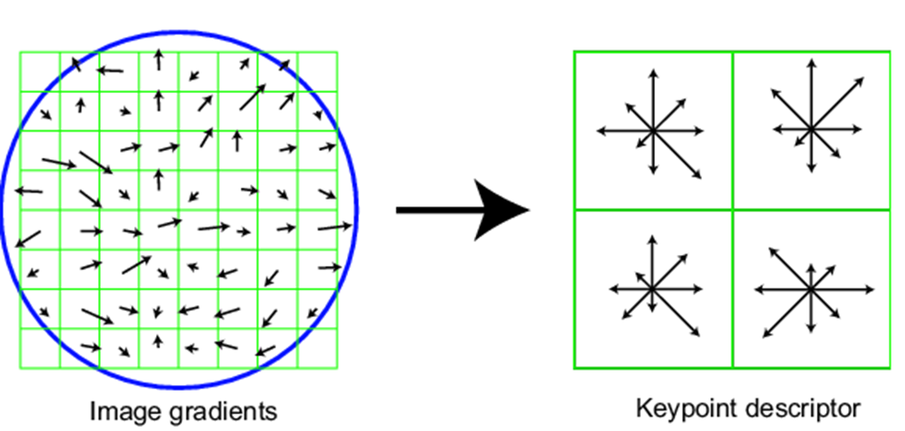
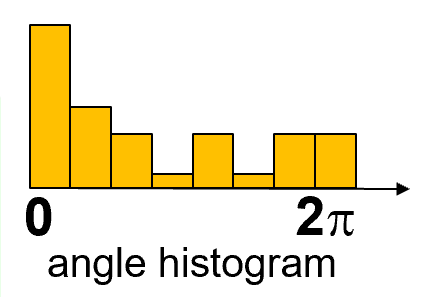
完整版：
- 将 \(16\times16\) 的窗口 划分为 \(4\times4\) 的网格
- 对每个网格计算其方向直方图
- 16 cells * 8 orientations = 128 dimensional descriptor(128 维向量)
SIFT Feature
- Descriptor 128-D
- 4×4块，每块为8维梯度角直方图: 4×4×8 = 128
- 归一化以减少光照变化的影响。
- 特征位置 \((x,y)\)
- 尺度，控制特征提取的覆盖范围
- 方向，实现旋转不变的 descriptor
SIFT 特征可以对图像进行分类
Bag of visual words¶
基于采集到的图像，利用高斯差分法检测感兴趣点，提取 SIFT 特征。然后将提取的描述符聚类，使用分层k-means聚类生成词汇树。将每个聚类中心称为 视觉单词(visual word )
Conclusion of SIFT
- 优点
- 期望在比例、旋转、光照等变化中的不变性。
- 局部 patch 具有很强的区分性和表征能力。
- 在刚性对象表示上非常有效。
- 缺点
- 提取耗时
对于大小为400 *400的图像，平均需要1秒。 - 对非刚性物体性能较差。
如人脸、动物等。 - 在严重的仿射失真下可能无法工作。
局部补丁是一个圆，而不是一个椭圆调整到仿射失真。
- 提取耗时
SURF detectors and descriptors¶
SIFT – scale invariant feature transform (Lowe 2004)
SURF – speeded up robust features (Bay et al. 2006)
- 角点检测应该是可重复的
- 特征提取：描述能力必须具有显著性和鲁棒性(distinctive and robust)
都需要 fast
SURF algorithm¶
-
Interest point detector:
- 计算积分图像
坐标 \((x,y)\) 的像素值是 前缀和 \(s(x,y)\)(左上方长方形的像素值求和). - 应用二阶导数(近似，求差分的差分，可以用积分图近似)滤波器对图像滤波操作
- 非极大抑制(在 \((x,y,\sigma)\) 空间中寻找局部极大值，其他的丢掉)
- 二次插值法
- 计算积分图像
-
Interest point descriptor:
- 把窗口分为 \(t\times 4\)(16 个子窗口)
- 计算 Haar 小波特征（离散情况下的近似）
- 在每个子窗口内，计算 \(v_{subregion}=\left[\sum dx,\sum dy,\sum |dx|,\sum|dy|\right]\)
- 这得到 64 个特征
Integral Image¶
Integral Image(a.k.a. Summed area table) 是
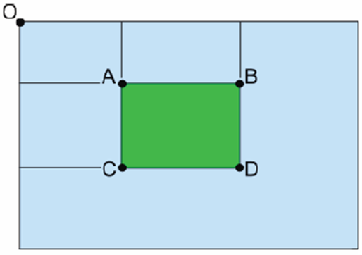
- \(S(x,y)=\sum\sum I(x,y)\)
- \(V(l,t,r,b)=S(l,t)+S(r,b)-S(l,b)-S(r,t)\) 得到矩形内的像素值的和
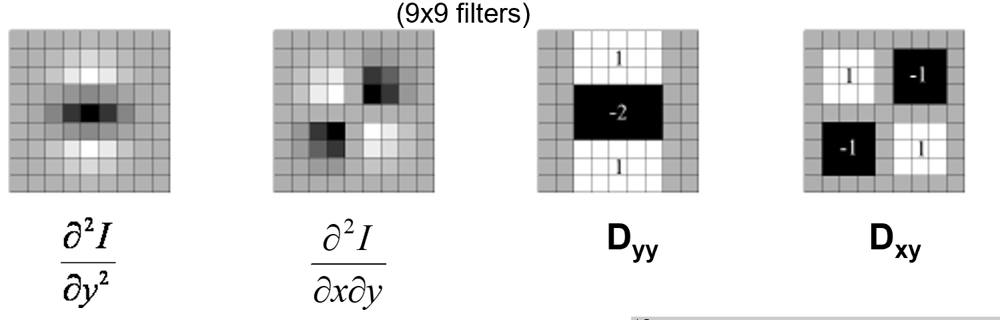
积分图让我们很方便的对尺度进行上采样
Interpolation¶
不同尺度之间可以用插值来计算中间的尺度。
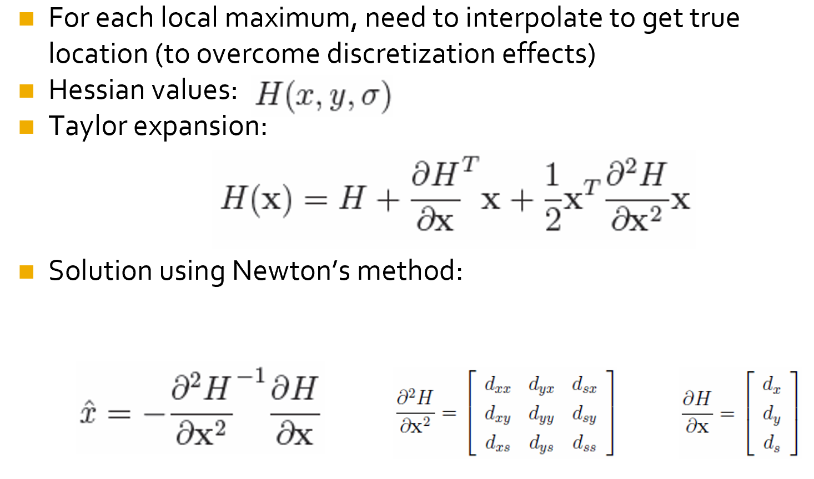
SURF descriptor
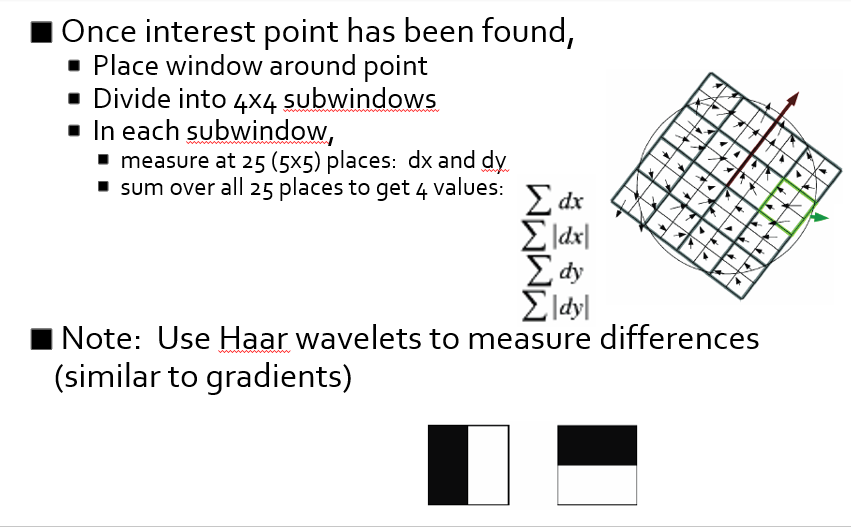
Why SURF is better than SIFT
- 维度低, 只用 64 维特征
- 在均匀、渐变、只有一条边的图像上 SIFT 无法分辨，但 SURF 可以
- 带噪声会使 SIFT 特征凌乱，对 SURF 几乎没有影响
RANSAC¶
RANSAC 解决图像拼接的离群点
RANSAC: RANdom SAmple Consensus
方法：排除离群点，只关注并使用 inliers.
思想：如果离群点被选中计算当前的匹配，那么回归出来的线肯定不足以支撑剩下点的匹配，和真正 inlier 得到的线有很大的差异。
RANSAC Loop
- 随机选择一组种子点作为变换估计的基础(例如，一组匹配)
- 计算种子点的变换
- 找到这次变换的 inliers
- 如果 inliners 的数目足够多，那么重新计算所有 inliners 上的最小二乘法估计
- 回归之后再计算 inliners 如此往复，继续调整。如果没有调整那我们可以停止循环。最终使得回归出的线达到最多的 inliners.
RANSAC 采样次数¶
需要多少次取样？假设 \(w\) 是 inliners 的一部分, \(n\) 个需要用来定义前提的点，进行了 \(k\) 次取样。
- \(n\) 个点都是正确的概率为 \(w^n\)
- \(k\) 次采样都失败的概率为 \((1-w^n)^k\)
- 选择达到足够大的 \(k\) 使得失败的概率低于阈值
RANSAC 将数据划分为 outiler 和 inliner.
- 优点
- 对于模型拟合问题是一种通用的方法
- 容易实现，容易计算失败率
- 缺点
- 只能解决适度 outliers 时的情况，否则开销比较高
- 很多实际问题中的 outliers 的比率较高（但有时挑选策略可以有帮助，而非随机选取）
Image Blending - Pyramid Creation¶
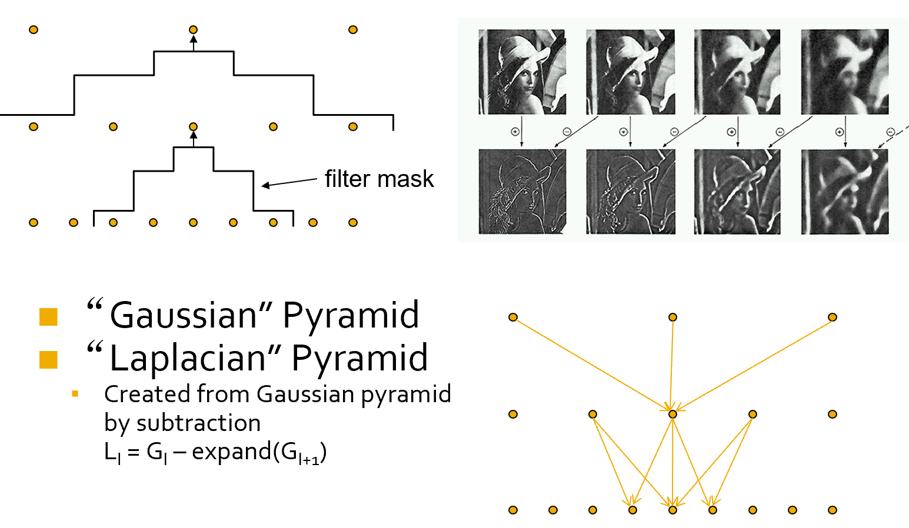
Image Stitching
- Detect key points 检测特征点
- Build the SIFT descriptors 提取 SIFT 特征
- Match SIFT descriptors SIFT 特征匹配（求欧氏距离）
- Fitting the transformation 计算变换
- RANSAC 筛除外点
- Image Blending 图像融合，解决跳变